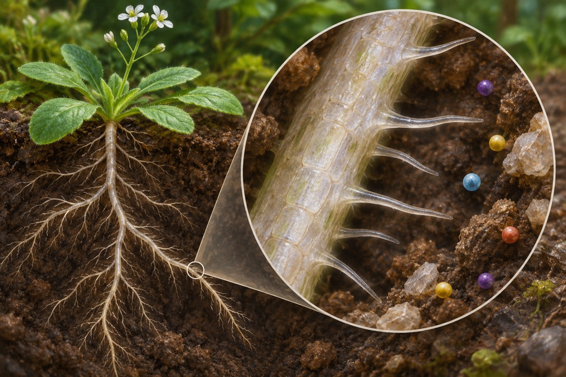

Module 01
Patterning of giant epidermal cells in sepals
Track individual epidermal cell lineages and measure cell size and endoreduplication separately.
Evidence recordOpen any of the ten modules to see the reported observation, its sources, and the research questions still open.
Track individual epidermal cell lineages and measure cell size and endoreduplication separately.
Evidence record
Quantify electrical current contributed by an attached bacterial biofilm.
Evidence record
Measure chlorogenic acid abundance in defined tomato tissues.
Evidence record
Measure differential deceleration across beak and braincase.
Evidence record
Measure root magnesium acquisition and record tissue magnesium and growth separately.
Evidence record
Identify secreted sophorolipid congeners separately from generic surface activity.
Evidence recordMeasure whether potato tubers with less free asparagine yield lower acrylamide in the tested processed product.
Evidence record
Measure acceleration and braking during pursuit trajectories.
Evidence record
Measure molybdate uptake or tissue molybdenum under limiting supply and distinguish these from downstream enzyme activity.
Evidence recordDetect a one-carbon-shorter hydrocarbon attributable to fatty acid photodecarboxylation.
Evidence record